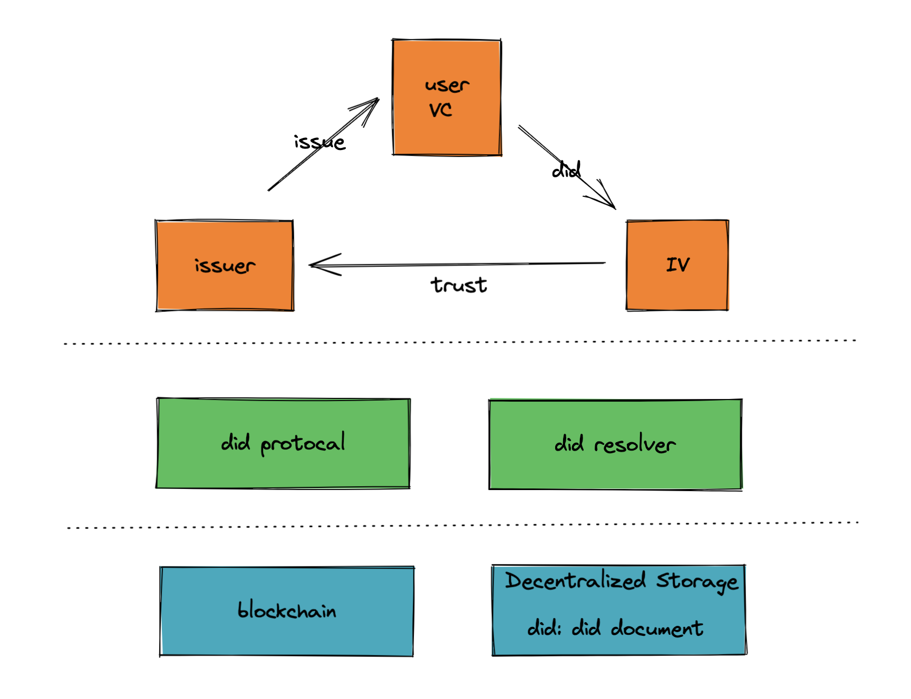

什么是 DID 身份，为什么需要 DID
DID 的全称是去中心化身份（Decentralized Identity）。去中心化身份是从传统的身份体系中演化而来的。从中心化身份、联盟身份、以用户为中心的身份、再到去中心化身份，总共经历了四个个阶段。理想情况下，在去中心化身份阶段，用户可以完全掌控自己的信息。
DID 不仅仅是一种新的身份标识方式，还是未来数字身份体系和 DPKI 体系中的重要组件。DPKI （Decentralized Public Key Infrastructure）是指去中心化公钥基础设施。与之相对应的是 PKI 体系，目前的 SSL/TLS 协议就是最大的 PKI 体系。DID 在未来有可能是最大的 DPKI，会与 SSL/TLS 协议有相同的影响力。
1. 中心化身份的问题
中心化的身份就是我们现在用的最多的身份类型，使用微信、淘宝、微博都需要注册一个新的身份，要把我们的信息重新收集一遍。平台上的用户数在增长到一定程度的时候，就会进入瓶颈期，因为用户的总数是有限的，而平台对利润增长的期望是无限的。继续的利润增长只能持续的通过各种方式去获取新的用户，并且从用户的数据中提取更大利润。
类似 FaceBook 基本就是靠用户的信息来挣钱，但是这样的商业模式存在很大的问题，平台利用用户的数据获取利润后，只有很少部分才能到达用户那。而且用户的数据在被收集之后，中心化的存储会让用户的数据暴露在巨大的风险之下，互联网上出现用户数据泄漏、买卖的情况屡次出现。 在 FaceBook 上就出现了很多次。
中心化的身份还有一个很大的问题，就是注销困难，有的软件虽然提供了注销的渠道，但是你无法确认你的账号是否真的被注销了。
最近炒的很火爆 Web3，最终的目标就是让数据回归到用户本身，用户对自己的数据有完全的处置权。
2. 为什么 DID 一定会出现
个保法的出台意味着个人对信息保护越来越重视。而 DID 主要的两个特性就是安全和**隐私保护，**刚好可以解决这个问题。
DID 可以让我们在不暴露自己隐私的情况下，就可以完成身份认证。比如你去网吧上网，不再需要是刷身份证和做人脸识别了，只需要证明你满了 18 岁即可。网吧也无法收集到你的信息，只知道你符合上网的年龄。
在现在讨论的很多的元宇宙中，所有的身份必然是要打通的，元宇宙本身是去中心化的，那么身份本身也是需要去中心化的，由用户自己保管。
另外 DID 不仅仅可以用来标识人，还可以用来标识设备、组织等等，可以满足未来更加丰富的场景。 DID 本身很安全，因为在 DID 中，不包括任何具体的用户信息。而且 DID 是可控的，可以任意产生和注销。DID 本身没有特别的存储要求，就是把这些信息直接记录在一张纸上也是有效的。
3. DID 要怎么实现
DID 自下而上包括 4 个组成部分。网络协议、分布式账本、DID 协议和具体的应用程序。网络协议层没有太大的变化，还是建立在 TCP/IP 的基础之上。具体的数据一般会存储在区块链和一个去中心化的存储系统中。针对不同的系统，要实现具体的 DID 协议。最后就是 DID 在具体场景中的使用。
整个 DID 系统的分层如下：

在 W3C 的标准中，DID 分成两部分，一部分是基础层，主要提供 DID 的存储和不可以篡改的保证，为上层的应用层提供服务。包括：
- DID 标识符（identifier）
- DID document
一部分是应用层，用户并不是直接使用 DID 在来进行验证，而是会使用可验证声明（Verifiable Credentials），简称 VC。 VC 的产生、传输和验证都是在应用层进行的。
3.1 DID 基础层
DID 标识符其实就是一个字符串，在 W3C 的草案中，DID 参考的是 URN 的标准，格式如下:
开头永远是 did，did method 是实现这个 DID 系统的名称，最后是系统生产的一个字符串。腾讯云基于 DID 标准开发了一个分布式身份系统 TDID，那么 TDID 服务产生的 DID标识符格式如下：
1
did:tdid:15:0xbd7345b2ff8d1dbf1e330a6c5dcf20c675b6c484
DID 对外的字符串实际上会作为一个 key，对应的 value 就是 did document，具体的信息会在 document 中。document 是一个标准的 Json，其中会包括一些用户的公钥、所使用的 DID 协议以及 DID 的服务请求地址、时间戳、签名等信息，下面是一个示例信息：
1
2
3
4
5
6
7
8
9
10
11
12
13
14
15
16
17{
"@context": "https://w3id.org/did/v1",
"id": "did:example:123456789abcdefghi",
"authentication": [{
// used to authenticate as did:...fghi
"id": "did:example:123456789abcdefghi#keys-1",
"type": "RsaVerificationKey2018",
"controller": "did:example:123456789abcdefghi",
"publicKeyPem": "-----BEGIN PUBLIC KEY...END PUBLIC KEY-----\r\n"
}],
"service": [{
// used to retrieve Verifiable Credentials associated with the DID
"id":"did:example:123456789abcdefghi#vcs",
"type": "VerifiableCredentialService",
"serviceEndpoint": "https://example.com/vc/"
}]
}
DID 标识符和 DID document 会被存储在区块链和去中心化存储上。在上面的图中，下面的两层都是为 DID 标识符和 DID document 服务的。
区块链的选用很灵活，可以是公链、联盟链、甚至可以是私有链，都可以用来部署 DID。
3.2 DID 应用层
最上面那层，就是可验证层。其中 issuer 是真实拥有用户信息的机构、比如政府、银行、大学等机构，可以颁发 VC。IV （Inspector-Verifier）接收 VC 并进行验证。Holder 是 VC 的拥有者，会向 Issuer 申请并获得 VC，同时这些 VC 会上链存储，Holder 拿到 VC 后就可以放在钱包中，可以多次使用。
在 Issuer 颁发 VC 时，然后会调用底层的 DID 系统，生成 DID 标识符和 DID document，然后将这些信息一起打包在 VC 中给到用户。用户在出示 VC 后，IV 就可以拿着 VC 进行验证。
在这里有一个问题，那么既然 Issuer 可以开具可信的 VC 为什么还需要用到区块链呢？因为在这里 IV 除了验验证 VC 的合法性之外，还需要验证 VC 属于当前持有的用户。在这种情况下，通过用户手上的私钥，可以很轻易的在链上验证用户是否是这个 VC 的持有者。
4. DID 的隐私保护
在这里需要注意，用户的具体信息并不会在 document 中存储，而是用链下存储的方式，即使是使用加密或者 hash 的方式也不行。一方面，这些信息会被永久的写到区块链上，如果使用的加密算法被攻破，那么所有的信息都会暴露。如果使用 hash，在多个地方使用后，就会被人推算出相关性，因为 hash 是不变的。个人隐私信息，只有在真正需要的时候通过安全的点对点方式传输。
另外，在不同的场景，最好使用不同的 DID 标识符，一方面是不同场景需要披露的信息不一样。另外使用不同的 DID 也可以避免被人进行关联性分析。尽量使用不同的 DID 标识符，因为单纯的通过 DID 标识符无法判断是否由一个人产生的。
最后，在使用信息的时候，选择性的披露自己的信息，比如在一些场景，只需要披露自己已成年，但是并不需要具体的出生日期。
文 / Rayjun
[1] https://github.com/WebOfTrustInfo/rwot1-sf/blob/master/final-documents/dpki.pdf